Texto 04 – Escala Cartográfica e Geográfica
Conteúdo: Escala geográfica; Escala cartográfica: numérica e gráfica.
Objetivo: Entender e aplicar o conceito de escala geográfica e cartográfica.
Conteúdo: Escala geográfica; Escala cartográfica: numérica e gráfica.
Objetivo: Entender e aplicar o conceito de escala geográfica e cartográfica.
Digite seu nome
Agora que já sabemos calcular os diferentes fusos horários entre os países do mundo, como visto na aula 03, devemos seguir adiante em nossa exploração pelo espaço geográfico.
Na aula de hoje, vamos explorar esse espaço na escala local, regional e na mundial, isto é, vamos trabalhar com as escalas geográficas e cartográficas.
Faremos um exercício de representação da escola em que estudamos para juntos aplicarmos o conceito de escalas na prática.
As escalas estão ligadas, basicamente, à extensão do fenômeno que vamos estudar. Como assim? Lembra da primeira aula sobre os conceitos da Geografia? Nela vimos o lugar, a região, o território, o espaço geográfico.
Não vivemos no mundo inteiro, mas sim em parte dele, o lugar. Para entendermos o mundo, podemos fazer recortes, sem o qual ficaria difícil estudar todas as suas partes de uma só vez.
Quando olhamos o planeta através de um mapa, podemos dar um “zoom” e visualizar mais detalhadamente alguma cidade, uma região ou um país. Essa seria a escala geográfica, isto, a dimensão local, regional ou mundial do fenômeno que queremos estudar, como um derramamento de óleo ou a migração da população de um país para outro.
Já a escala cartográfica está ligada a representação, ao tamanho dos objetos que teremos em um mapa. Para que uma cidade inteira caiba em um mapa do tamanho de uma folha de seu caderno, teremos que reduzi-la milhares de vezes. Essa redução entre o tamanho real e o tamanho no papel é a escala cartográfica.
Teste seu conhecimento
A escala tem um tamanho que pode ser demonstrado por um número ou por uma reta gráfica. Como a escala representa uma proporção entre objetos e o papel, sabemos quantas vezes ele foi reduzido.
Observe essa planta baixa de uma casa qualquer. A escala utilizada é 1:50, ou seja, cada um centímetro no desenho corresponde a 50 centímetros na realidade. Quer dizer que esse tamanho de escala é recomendado para representar áreas com bastante detalhes.
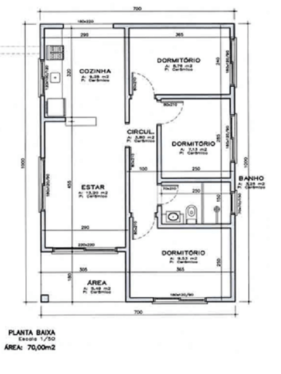
Agora veja outro exemplo: o primeiro mapa abaixo está representado (desenhado) na escala de 1:10.000. Podemos ler isso da seguinte forma: um para dez mil. Isso significa que 1 centímetro no desenho (mapa) corresponde a 10 mil centímetros na realidade, isto é, no tamanho real dessa representação, nesse caso uma escola. Lembrando que 10.000 centímetros é igual a 10 metros, veremos isso adiante.
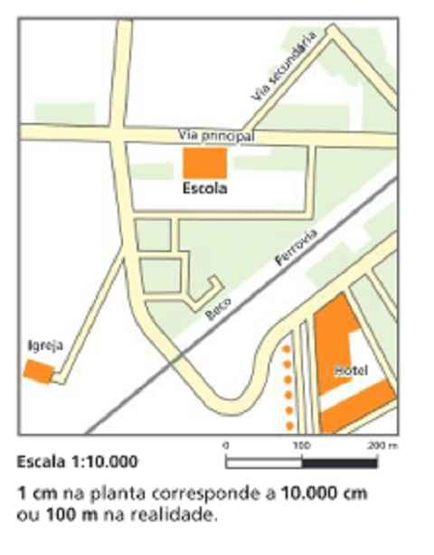
Agora temos outra escala, 1:25.000. A escola, nesse contexto, ficou um pouco menor, pois foi dividida 25 mil centímetros para caber no mapa.
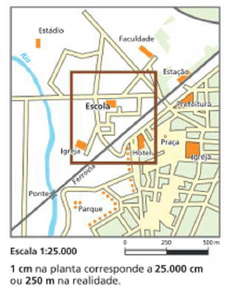
Já na escala de 1:100.000, não conseguimos ver a escola com precisão, pois seu tamanho foi dividido 100 mil centímetros, ou 1000 metros ou 1 quilômetro!.
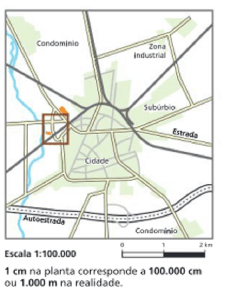
Conclusão:
Quanto mais números tivermos na escala, mais o objeto que queremos representar foi dividido e menor a quantidade de detalhes no mapa.
Por outro lado, quando o número estiver mais próximo de 1:1, mais perto da realidade o mapa estará, quer dizer, maior será o número de detalhes. Veja o exemplo:
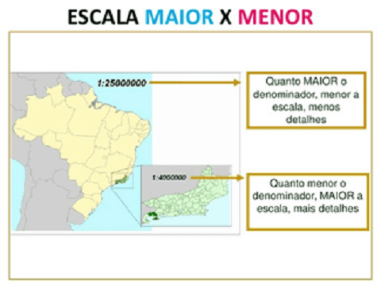
As escalas são representadas de duas maneiras. A primeira delas é a escala numérica, que diz o quanto vale 1 centímetro na realidade.
A outra forma é a escala gráfica. Nela há uma reta graduada em segmentos que diz diretamente quanto vale 1 centímetro na realidade, conforme a figura abaixo:
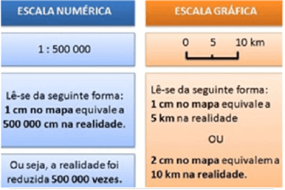
A vantagem da escala gráfica é que podemos saber diretamente a medida real no mapa, basta medir com uma régua.
Para utilizar as escalas e poder reduzir ou aumentar objetos que caibam em uma folha de caderno por exemplo, temos que verificar uma simples transformação de unidades de medidas de comprimento. (Será visto mais detalhadamente nas aulas de Física).
No gráfico abaixo vemos que cada unidade de medida pode ser multiplicada ou dividida por 10.
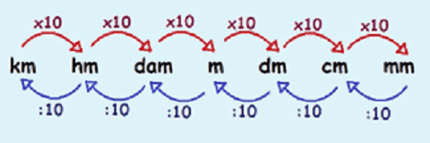
Isso quer dizer 1 km multiplicado 3 vezes por 10 é igual a 1000 metros. Podemos facilitar a expressão.
Km – M, acrescentar 3 casas decimais. Ex: 3 km = 3.000 m.
Ou, ao contrário,
M – Km. Diminuir 3 casas decimais. Ex: 5.000 m = 5km.
Também utilizaremos bastante a conversão de Metros para centímetros:
M – Cm. acrescentar 2 casas decimais. Ex. 1m = 100cm.
Ou, ao contrário,
Cm – M. Diminuir 2 zeros. Ex: 600cm = 6m.
Da mesma forma, para transformar Km para cm, basta acrescentar ou diminuir 5 casas decimais.
Ex: 5km = 500.000cm.
Ex: 50.000cm = 0,5km.
Agora que já sabemos transformar unidades de medidas, vamos ver como descobrir os elementos da escala.
Toda escala será, por padrão, representada em centímetros e terá os seguintes elementos:
Podemos estabelecer relações entre esses elementos, isto é, se tivermos dois deles, será fácil descobrir o terceiro.
Vários exercícios solicitam a transformação das unidades na resposta, ou seja, você deverá transformar cm em m ou em km.
A escala também pode ser o resultado da divisão da distância no papel e a distância real.
Finalmente, para descobrir a distância no papel, dividimos a distância real pela escala.
Teste seu conhecimento
Já sabemos que a escala é um dos elementos dos mapas (veremos as projeções na próxima aula). Agora vamos relembrar a importância dos mapas.
Segundo o Instituto Brasileiro de Geografia e Estatística – IBGE, existe diferentes formas de produzir mapas dependendo do objetivo do usuário. Exemplo:
Isso quer dizer que conforme a escala vai se aproximando da realidade, ou seja, 1:1 – torna-se menor - ocorre um aumento da área representada e uma diminuição do grau de detalhamento cartográficos.
Teste seu conhecimento
O mapa-múndi abaixo possui quais características em relação a sua escala cartográfica.? Assinale a alternativa correta.
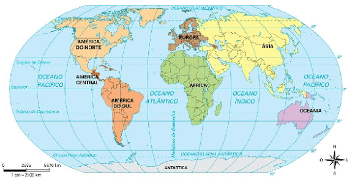
Fonte: Organizado pelo autor.
Teste seu conhecimento
Uma cidade está localizada a 5cm de outra, medidos sobre um mapa de escala 1:200.000 Qual a distância real (no terreno) entre as cidades.
Globo - É uma representação cartográfica sobre uma superfície esférica, em escala pequena, geralmente de 1: 54.000.000. Veja aqui:
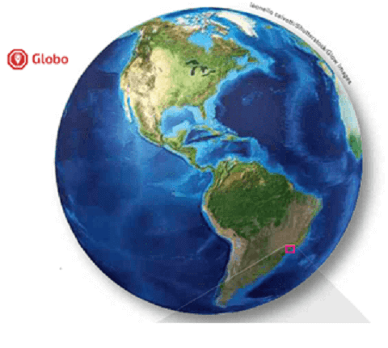
Mapa - Trata-se de uma representação no plano, normalmente em escala pequena, dos aspectos geográficos naturais, culturais e artificiais de uma determinada área.
Suas características são:
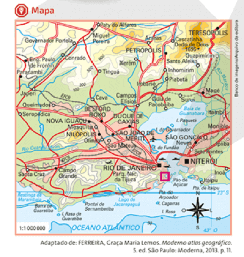
Carta - Trata-se, da mesma forma, de uma representação plana, em escala média ou grande e pode ser articulada de maneira sistemática com outras cartas para permitir uma visualização mais ampla do fenômeno ou da área escolhida. Clique
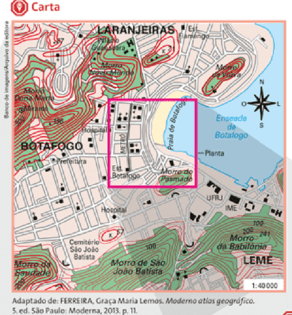
Planta - Conforme vimos no exercício sobre o tamanho da casa, a planta é utilizada para uma representação de uma área muito limitada e na escala grande, com bastante riqueza de detalhes.
Segundo o IBGE,
Veja a figura de uma planta:
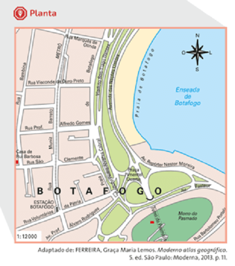
Podemos resumir no quadro abaixo as distintas escalas e seus usos:
| Tipo | Escalas |
|---|---|
| Plantas cadastrais, usadas para identificação de lotes no espaço urbano | 1:1.000 a 1: 2.000 |
| Mapas topográficos municipais | 1:50.000 a 1: 250.000 |
| Mapas de grandes regiões brasileiras | 1:500.000 a 1:2.000.000 |
| Mapas de grandes países como o Brasil | Escalas menores que 1:5.000.000 |
Teste seu conhecimento
O mapa não é uma simples ilustração. É um meio de comunicação, um instrumento de localização, uma fonte de conhecimento sobre uma determinada realidade. Para o geógrafo francês Yves Lacoste, ler um mapa ou uma carta geográfica significa “saber agir sobre o terreno”. Quanto à representação cartográfica, marque a alternativa correta.
P: Por que a escala grande tem um número pequeno, enquanto a escala pequena tem um número grande? Isso confunde bastante a mente.
R: Ocorre que para que os objetos da realidade possam caber em uma folha de papel, por exemplo, eles precisam ser “diminuídos”. Sendo assim, eles terão novas medidas menores, e essas medidas são demonstradas em forma de fração, ou seja, de 1 para 10.000. Significa que o tamanho real foi reduzido 10 mil vezes. Agora, quando a escala é grande, como de 1:10, o objeto, pode ser uma casa ou quarto, foi pouco reduzido, por isso que o número embaixo da fração é pequeno. Quando este número é muito alto, como 1 milhão, a escala é pequena porque foi reduzido 1 milhão de vezes, por isso é chamado assim.
P: Queria saber mais sobre a diferença entre escala cartográfica e geográfica?
R: A noção de escala possui, claramente, outras questões
que transcende a Geografia. Quando observamos fenômenos em diferentes tamanhos, como um derramamento de
óleo, que pode abarcar uma região ou se dissipar por continentes. Ou quando estudamos na Física fenômenos no
nível subatômico, vemos que suas leis são diferentes dos fenômenos, digamos, em escala “normal”.
A escala geográfica tem mais a ver com a extensão e a duração do fenômeno investigado. Uma variação da
vegetação ou a migração de milhões de pessoas devido à guerra, como na Síria, possui uma escala mais ampla
de análise, ao nível planetário. Já a escala cartográfica tem mais relação com a proporção matemática dos
fenômenos que queremos representar. A noção de escala é bastante complexa e abrange a observação e análise
de fenômenos no microcosmo, no mundo e, também, no vasto espaço sideral.
P: Tenho vontade de trabalhar com arquitetura, vou ter que saber sobre escala?
R: Sim, vai utilizar e trabalhar com plantas na escala grande todos os dias. Ao fazer representações de casas, ou interior de imóveis, vai precisar saber utilizar as proporções da escala cartográfica. Também vai precisar saber sobre organização do espaço geográfico ao propor a construção de um objeto como uma ponte em uma cidade. Portanto, também precisará conhecer Geografia muito bem para não dificultar a vida das pessoas, dependendo da intervenção realizada em escala local, regional ou, até mesmo, nacional.
Construir uma Planta da Escola
Vamos sair da sala de aula para praticar o conhecimento que acabamos de conhecer. Acompanhado pelo professor, vamos percorrer a área de nossa escola e registrar em uma folha A4 no caderno, sua superfície através de uma escala. Segue as instruções:
1) A medida que caminharmos sobre os locais da escola, corredores, refeitórios, estacionamentos, vamos fazer uma planta da Escola na escala de 1:200. Como a escala é de 1: 200, logo:
2) É possível determinar, aproximadamente, um metro sendo correspondente a um passo largo. Você pode contar quantos passos possui uma sala de aula, corredores e depois transformar a quantidade de passos (metros) em centímetros.
3) Material necessário: um caderno, uma folha A4 e um lápis. Esse trabalho irá compor sua nota ao final do bimestre.
4) Duração da atividade: 30 minutos. Ao final, retornar a sala de aula, deixar a planta desenhada no caderno para receber o visto de confirmação.

IBGE. Noções Básicas de Cartografia. Rio de Janeiro, 1999. Disponível em:https://biblioteca.ibge.gov.br/ visualizacao/monografias/GEBIS%20-%20RJ/ ManuaisdeGeociencias/ Nocoes%20basicas%20de%20cartografia.pdf. Acesso em: 14.dez 2020.
SENE, Eustáquio de; MOREIRA, João Carlos. Geografia geral e do Brasil: espaço geográfico e globalização: ensino médio 3. ed. São Paulo: Scipione, 2016.